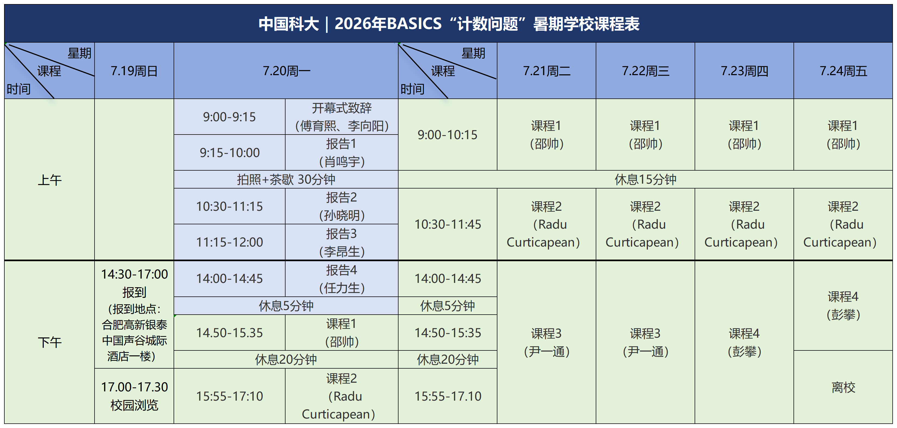
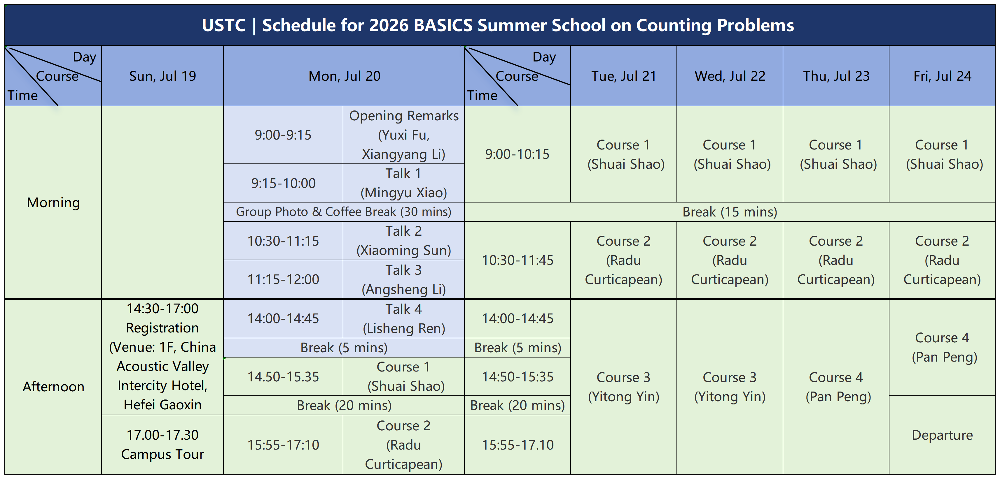
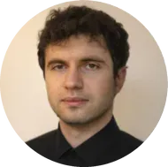

日程安排
中文版

English version

课程介绍
BASICS Workshop and Summer School是上海交通大学BASICS实验室（Laboratory for Basic Studies in Computing Science）主办的年度学术活动。从2000年起，已成功举办了二十二届，今年主题为"计数问题"，由中国科大计算机学院理论研究组承办。

Radu Curticapean
Prof. Dr.
University of Regensburg
Parameterized and Fine-grained Counting Complexity
Abstract
In this course, we will study results and techniques in parameterized and fine-grained counting complexity. Given a large $n$-vertex graph $G$, how hard is it to count small $k$-vertex patterns $H$ in $G$? We can certainly use brute force in time $O(n^k)$, but are substantially faster algorithms possible? Can we classify the complexity depending on the patterns being counted? As it turns out, many pattern counting problems admit a well-defined notion of basis change. We will study such basis changes and understand how they can be used to pinpoint the complexity of pattern counting problems. Moreover, we will consider the complexity of counting large patterns in structurally restricted graphs. For example, counting perfect matchings is easy on planar graphs but hard on general graphs. What happens in between, for example, on graphs that have bounded genus or enjoy other nice structural properties? We will answer such questions by combining matchgate theory and techniques from parameterized complexity.
Bio
Radu Curticapean received his PhD in 2015 from Saarland University (Saarbrücken, Germany). His thesis on parameterized counting complexity received an award from the EATCS. He then worked as a post-doc at the Hungarian Academy of Sciences (Budapest, Hungary), as a research fellow at the Simons Institute for the Theory of Computing (Berkeley, USA), and as a post-doc, assistant professor, and associate professor at the IT University of Copenhagen (Copenhagen, Denmark), before joining the University of Regensburg (Regensburg, Germany) as a full professor and leader of the Algorithms and Complexity group. His research focuses on counting problems and algebraic complexity theory, and he currently is the PI of the ERC Starting Grant project "Counting (with) homomorphisms", which explores fascinating connections between the theory of homomorphism counts and problems in algorithms, complexity, and algebra.
尹一通
教授
南京大学
Rapid Mixing via Localization Techniques
Abstract
This lecture covers recent localization techniques for proving rapid mixing of Markov chains. After a brief review of mixing time, spectral gap, and variance/entropy contraction, we introduce spectral independence and coupling independence as modern correlation criteria that imply fast convergence of Glauber dynamics and related local Markov chains. The main focus is the framework of localization schemes, exemplified by the field dynamics—a localization-based Markov chain that interpolates between a target Gibbs distribution and more tractable tilted or pinned distributions. We explain how the field dynamics can be viewed as a continuous-time down-up walk, how it fits into the broader localization framework, and why it provides a powerful bootstrapping mechanism for transferring mixing bounds across parameters. The lecture emphasizes the local-to-global philosophy underlying these methods and illustrates their role in recent advances for spin systems, including rapid mixing near and at criticality, where classical techniques are often insufficient.
Bio
Professor Yitong Yin is a professor in the Theory Group at the School of Computer Science, Nanjing University, and a New Cornerstone Investigator. He received his B.S. in Computer Science from Nanjing University and his Ph.D. in Computer Science from Yale University. His research lies in theoretical computer science, with a focus on randomized algorithms, computational sampling and counting, Markov chain Monte Carlo theory, data structures, and parallel and distributed computation. His work has advanced the theoretical foundations of sampling and counting, including computational phase transitions in spin systems, sampling Lovász local lemma for constraint satisfaction problems, and algorithmic frameworks for parallel, local, and derandomized MCMC. He has published extensively in leading journals and conferences, including JACM, SICOMP, STOC, FOCS, SODA, and ICALP.
邵帅
教授
中国科学技术大学
Complexity Classification of Counting Problems
Abstract
In this mini-course, we will study the complexity classification of counting problems. A central goal of this study is to prove complexity classification theorems which state that every problem in some large class is either polynomial-time computable (tractable) or $\#\mathsf{P}$-hard, known as dichotomy results. Such results are important as they tend to give a unified explanation for the tractability of certain counting problems and a reasonable basis for the conjecture that the remaining problems are inherently intractable. The course focuses on the framework of Holant problems on Boolean variables, as well as other frameworks that are expressible as Holant problems, such as counting constraint satisfaction problems and counting Eulerian orientation problems. We will introduce basic techniques for Holant complexity classification and present several attempts to achieve a complete dichotomy for complex valued Holant problems.
Bio
Shuai Shao is a faculty member at the University of Science and Technology of China (USTC, his Alma Mater). Before that, he worked as a postdoc at the University of Edinburgh, and the University of Oxford. He obtained his Ph.D. in Computer Science from the University of Wisconsin at Madison, and his B.Sc. in Mathematics from the School of the Gifted Young, USTC. His research interests focus on the complexity classification of counting/decision/optimization problems in the Holant (also known as the edge-CSP) framework. He is also interested in approximate counting algorithms and their connections with the phenomenon of phase transitions in statistical physics.
彭攀
教授
中国科学技术大学
Sublinear Subgraph Counting
Abstract
Subgraph counting is a central problem in graph algorithms: given a small pattern $H$ and a large graph $G$, estimate or determine the number of copies of $H$ in $G$. Over the past two decades, this area has evolved along several interconnected directions, including sublinear-time query algorithms, streaming and sketching methods, exact and approximate counting in sparse host graph classes, and, more recently, extensions to directed graphs and hypergraphs. This mini-course will survey classical ideas and modern techniques for proving optimal bounds in a range of sublinear models.
Bio
Pan Peng is a faculty member in the School of Computer Science and Technology at the University of Science and Technology of China. His research interests lie at the intersection of theoretical computer science, network science, and data science, with a current focus on sublinear algorithms, graph algorithms, and the privacy and robustness of algorithms. Before joining USTC, he was a Lecturer (Assistant Professor) in the Department of Computer Science at the University of Sheffield, UK. He also held postdoctoral positions at TU Dortmund, Germany and at the University of Vienna, Austria. He was a long-term participant in the Simons Institute program on Sublinear Algorithms at UC Berkeley. He received his Ph.D. from the Institute of Software, Chinese Academy of Sciences and his bachelor's degree in Mathematics from Beijing Normal University.